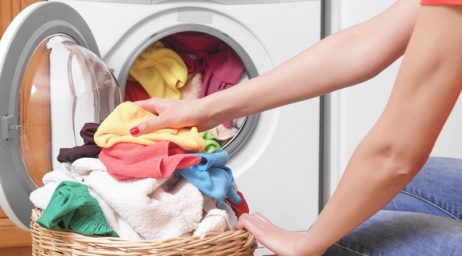
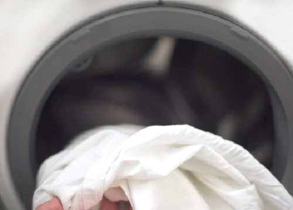
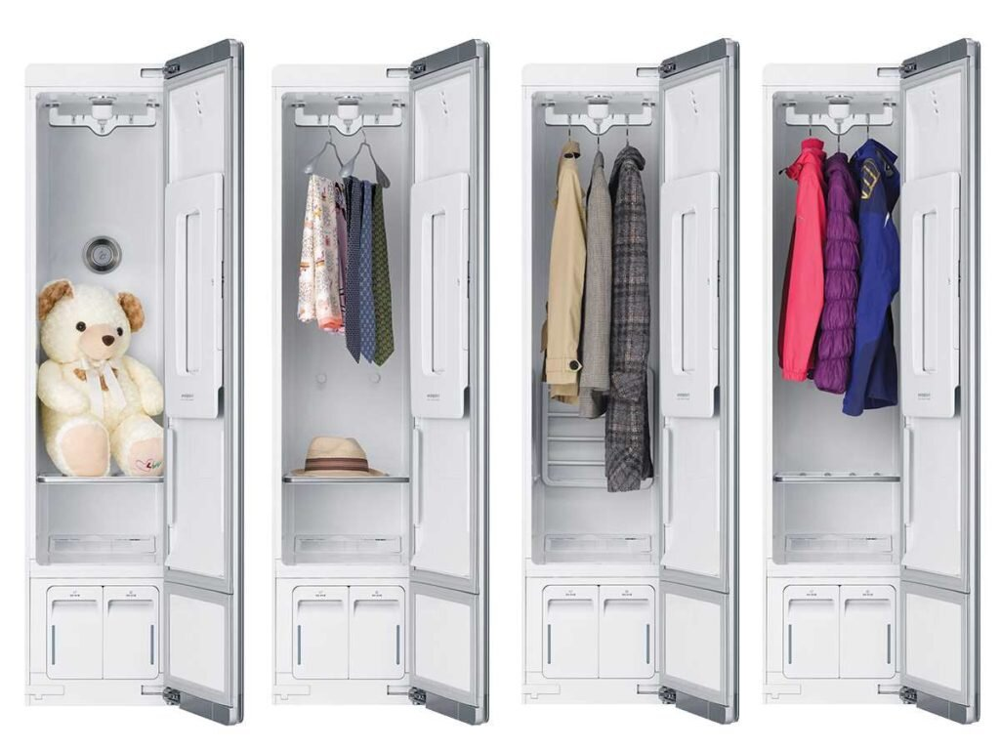
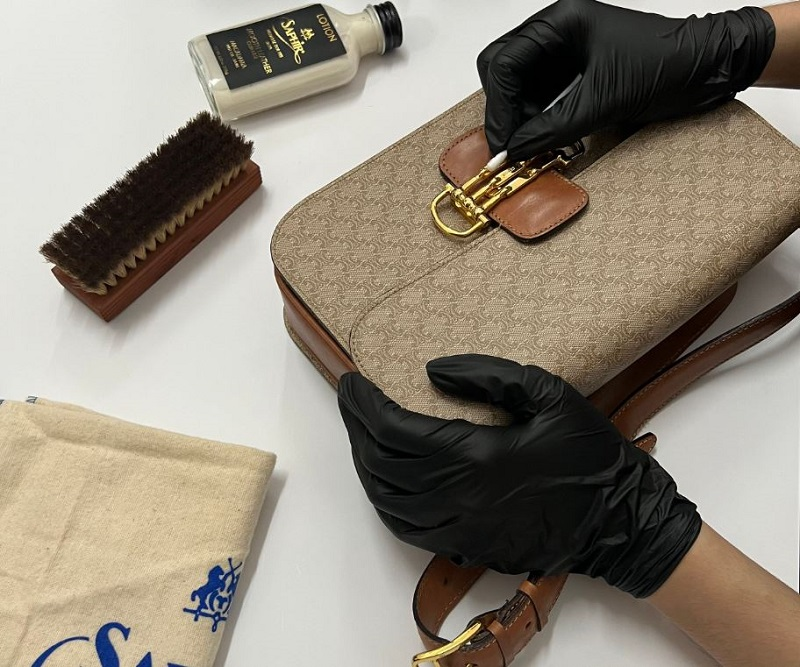
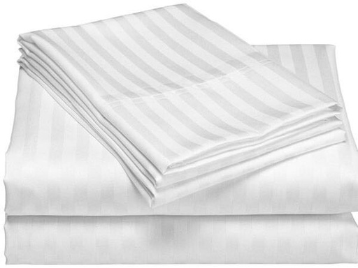
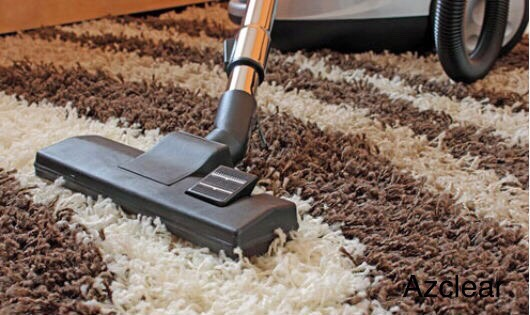
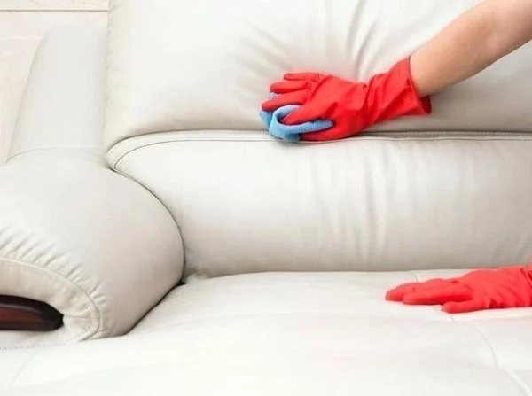
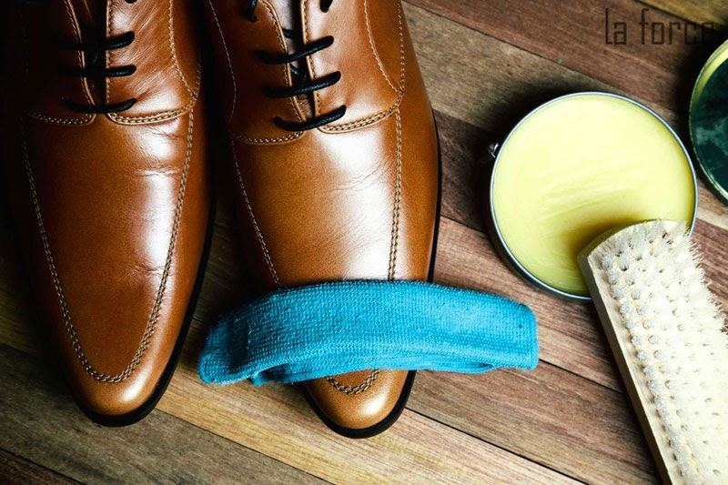
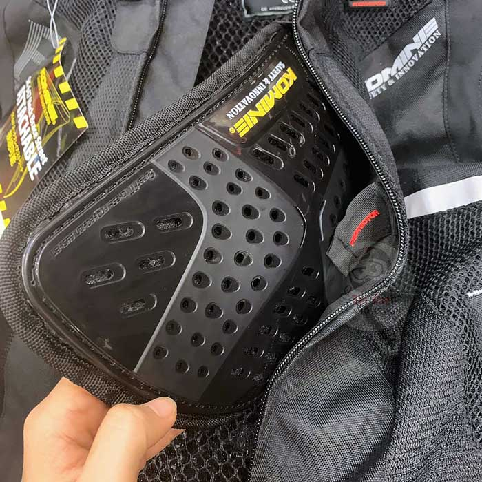
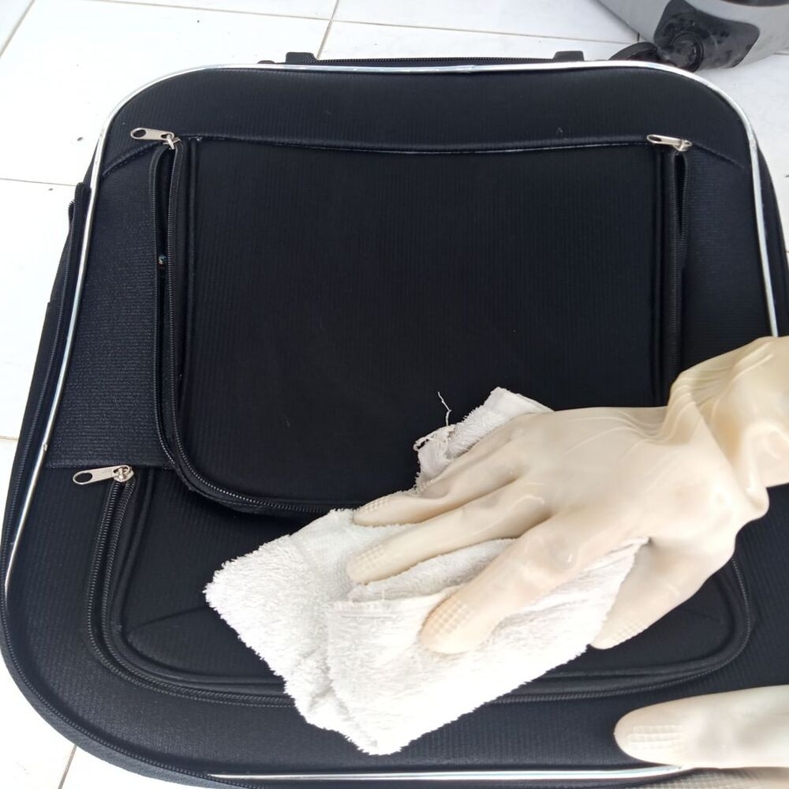

Tiệm giặt sấy quần áo lấy ngay, giặt sạch và sấy khô quần áo của bạn với thời gian nhanh nhất.
Đơn giá chỉ từ 17.000đ/Kg.
Giặt ủi chăn ga, đồ vải, chăn ga, mền, drap, khăn tắm khăn mặt.
Đơn giá chỉ từ 20.000đ/Kg.
Giặt màn cửa (Rèm cửa) sẽ tới tận nơi tháo lắp và giặt và giao cho bạn nhanh nhất.
Đơn giá chỉ từ 25.000đ - 45.000đ/Kg.
Giặt hấp áo Vest, quần tây, áo sơ mi, giày , áo dài , đầm váy, váy cưới, chất liệu cao cấp,...
Đơn giá chỉ từ 45.000đ - 175.000đ/Cái.
Tiệm giặt balo túi xách giao nhận tận nhà cho bạn chỉ có tại đây.
Đơn giá chỉ từ 40.000đ/Cái.
Giặt sấy chăn-ga-drap.
Đơn giá chỉ từ 20.000đ/Kg.
Thảm Nhỏ (Dưới 2m²): Loại thảm chân, thảm bếp, thảm lông 100.000đ - 150.000đ/Tấm.
Thảm lớn (trên 2m²): Thảm sàn văn phòng, thảm trải phòng 50.000đ - 80.000đ/m².
Sofa vải: Giặt khô, hút bụi, xử lý vết bẩn 80.000đ - 100.000đ/Chỗ ngồi.
Sofa da: Dưỡng da, khử mùi, làm mới 100.000đ - 120.000đ/Chỗ ngồi.
Giày da thuộc, giày tây, giày da lộn và các dòng giày có chất liệu tương tự da 160.000đ/Đôi.
Giày thể thao, giày sneaker, giày chạy bộ, giày vải, giày búp bê, guốc… 80.000đ/Đôi.
Nón Thường 20.000đ/Nón.
Nón FullFace 150.000đ/Nón (không phụ kiện), 200.000đ/Nón (có phụ kiện).
Vali cỡ nhỏ (dưới 20 inch): Vệ sinh bên trong và bên ngoài 100.000đ/Chiếc.
Vali cỡ lớn (trên 20 inch): Làm sạch kỹ + xử lý vết ố 150.000đ/Chiếc.
Số Kg được cân sau khi đồ đã được giặt và sấy khô.
Giao nhận 2 chiều (tận nhà).
Từ 7h - 22h mỗi ngày, 7 ngày/ tuần.